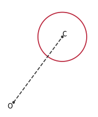
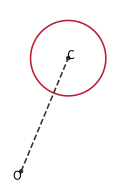
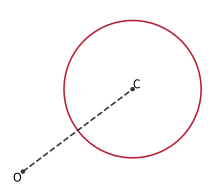

別冊練習問題 9 の解答 円上の点の |z| の最大・最小
(1) 複素数 \(z\) が \(|z-(6 + 8 i)|=3\) をみたして動くとき、\(|z|\) の最大値と最小値を求めよ。
図形
\(|z-(6 + 8 i)|=3\) は中心 \(C(6 + 8 i)\)、半径 \(3\) の円。\(|z|\) は原点からの距離。

中心との距離
\[OC=|6 + 8 i|=10\]
最大・最小
原点と中心を結ぶ直線上で：
\[\text{最大 }10+3=13,\qquad \text{最小 }|10-3|=7\]【答案】
\[\text{最大 }13,\ \text{最小 }7\]答
(2) 複素数 \(z\) が \(|z-(5 + 12 i)|=4\) をみたして動くとき、\(|z|\) の最大値と最小値を求めよ。
図形
\(|z-(5 + 12 i)|=4\) は中心 \(C(5 + 12 i)\)、半径 \(4\) の円。\(|z|\) は原点からの距離。

中心との距離
\[OC=|5 + 12 i|=13\]
最大・最小
原点と中心を結ぶ直線上で：
\[\text{最大 }13+4=17,\qquad \text{最小 }|13-4|=9\]【答案】
\[\text{最大 }17,\ \text{最小 }9\]答
(3) 複素数 \(z\) が \(|z-(8 + 6 i)|=5\) をみたして動くとき、\(|z|\) の最大値と最小値を求めよ。
図形
\(|z-(8 + 6 i)|=5\) は中心 \(C(8 + 6 i)\)、半径 \(5\) の円。\(|z|\) は原点からの距離。

中心との距離
\[OC=|8 + 6 i|=10\]
最大・最小
原点と中心を結ぶ直線上で：
\[\text{最大 }10+5=15,\qquad \text{最小 }|10-5|=5\]【答案】
\[\text{最大 }15,\ \text{最小 }5\]答